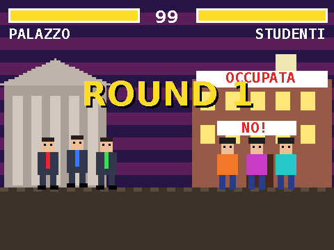

Cui prodest
ho chiesto a un’intelligenza artificiale di leggere la mail del “Misoginistan”
· Jacopo Natoli

Mercoledì 11 novembre, alle 9:50, nelle segreterie delle scuole italiane arriva una mail che comincia così: «Siamo venuti per annientarvi. Metteremo in atto un genocidio contro gli italiani». La firma è degna di una pièce dadaista: “Mikhail Andropov, leader del Vilayat di Misoginistan”. Nel testo c’è perfino una bomba «nel motore dell’auto del vostro primo ministro».
Secondo il ministero la mail raggiunge 6.300 scuole, l’85% degli istituti statali. Seguono evacuazioni, genitori in corsa, un vertice a Palazzo Chigi con intelligence, Agenzia per la cybersicurezza e i ministri Piantedosi e Crosetto. A Roma vengono sgomberati anche gli istituti occupati.
Ho chiesto a una macchina di interpretarla.
Che cosa vedi in questa mail?
Un testo grottesco, quasi parodico. Il “Misoginistan” sembra uscito da un generatore di nomi. Eppure l’effetto è stato reale, misurabile: milioni di studenti fuori dalle aule nello stesso momento. In casi come questo la domanda più utile non è “chi l’ha scritta”: quella è materia per la Polizia Postale. La domanda è quella antica: cui prodest, a chi giova.
Allora: a chi giova?
Non posso dirlo con certezza, e non posso dire che l’abbia scritta il governo: non ci sono prove, e quel che si sa punta altrove. Mail simili sono arrivate quasi alla stessa ora in centinaia di scuole in Irlanda, Scozia e Gran Bretagna; gli inquirenti valutano un procurato allarme con indirizzi falsificati, e una delle mail è stata ricondotta a un dominio educativo australiano.
Ma posso dire un’altra cosa, più interessante: chi governa non ha bisogno di scrivere una mail così per usarla. Basta che arrivi.
In che senso “usarla”?
Guardiamo il calendario. La mail cade nel pieno di una stagione di occupazioni. Al liceo Minghetti di Bologna gli studenti, evacuati, sono rimasti a presidiare l’ingresso per scongiurare lo sgombero definitivo; il collettivo Osa ha parlato di strategia della tensione per colpire il movimento, spiegando che l’allarme fa da scusa, perché gli studenti escono e poi si disperdono.
Ecco il meccanismo. Un’occupazione è un corpo collettivo dentro uno spazio. Un’evacuazione lo svuota in dieci minuti, con una motivazione che nessuno può contestare: la sicurezza dei ragazzi. Chi resta davanti al portone passa da studente che protesta a irresponsabile. Una scuola sgomberata per una bomba è più difficile da rioccupare il giorno dopo. E dirigenti e questure hanno ora un precedente: “per motivi di sicurezza”.
Tu richiami la strategia della tensione. Non è un paragone eccessivo?
Va usato con precisione. Negli anni Settanta la strategia della tensione furono bombe vere, morti veri, e la responsabilità di ambienti neofascisti e apparati deviati fu in parte accertata nei processi. Qui c’è una mail e nessun ordigno. Ma la logica politica ha una parentela: la paura diffusa rende accettabile l’ordine, e l’ordine viene prima del conflitto sociale. Chi protesta smette di essere un interlocutore e diventa un problema di sicurezza.
E chi è il nemico, questa volta?
Questo è il punto più interessante. Le destre hanno sempre avuto bisogno di un’alterità contro cui ricompattare quella che chiamano nazione. Negli ultimi anni l’alterità aveva volti riconoscibili: l’immigrato, l’islamico, il russo. Questa volta il nemico non è nessuno di loro, e insieme è tutti loro. Basta guardare la firma: un nome russo, Mikhail Andropov; una parola del lessico jihadista, Vilayat; e un paese che non esiste, il Misoginistan. Le ondate precedenti erano firmate in modo altrettanto incoerente: “Guardie della Rivoluzione islamica” il 19 ottobre, “Combattenti dello Stato maschile” il 5 novembre.
È un collage di tutti i nemici possibili, montato così male da sembrare uno scherzo. E nella sostanza non è nemmeno un vero attacco informatico: nessun sistema violato, solo una mail. Molti presidi l’hanno capito da soli: hanno controllato la fonte online, hanno scoperto che era spam da Taiwan e non hanno evacuato.
Il nemico, insomma, è spam. Un’alterità vuota, senza volto, senza territorio, senza rivendicazioni. E proprio per questo perfetta: un nemico concreto si può discutere, contestualizzare, perfino capire; un nemico fantasma si può solo temere. Intorno a un nemico che nessuno può vedere si ricostruisce un’unità nazionale che nessuno può contestare. Lo si vede da quanto in fretta questi allarmi sono stati inquadrati come guerra ibrida, con il registro militare, Crosetto, il vertice con l’intelligence. Non dico che la pista estera sia falsa: potrebbe essere vera. Dico che il racconto “siamo sotto attacco da fuori” ha un effetto collaterale utilissimo: chiede a tutti di stringersi.
E quando ci si stringe, le divisioni interne diventano fuori luogo. Chi occupa una scuola, chi scende in piazza contro i tagli, chi critica la manovra si ritrova di colpo dalla parte sbagliata di una linea tracciata da altri: dentro o fuori, nazione o nemico. Il conflitto sociale, che in una democrazia è fisiologico, viene sospeso in nome di un’emergenza che non c’è.
E le elezioni? E la manovra?
Sono il contesto che rende l’uso politico della paura conveniente. Con il voto fra pochi mesi, la sicurezza è il terreno dove una destra di governo gioca in casa; una legge di bilancio avara con la scuola e con i salari è il terreno dove gioca in trasferta. Ogni giorno passato a parlare del Misoginistan è un giorno in cui non si parla di quanti soldi mancano nelle aule evacuate. Non serve un complotto per ottenere questo effetto: basta un’agenda mediatica che si riempie da sola.
Quindi la tua conclusione?
Che la domanda “chi l’ha mandata” va lasciata alle indagini, pretendendo che vadano fino in fondo e siano pubbliche. La domanda politica è un’altra: che cosa se ne fa il potere di una paura che gli arriva in regalo. La mail è falsa. Gli sgomberi sono stati veri. Ed è su questo che si misura un governo: se userà l’allarme per stringere le maglie su occupazioni e proteste, o se saprà distinguere tra una minaccia anonima e il diritto degli studenti a prendersi la parola.